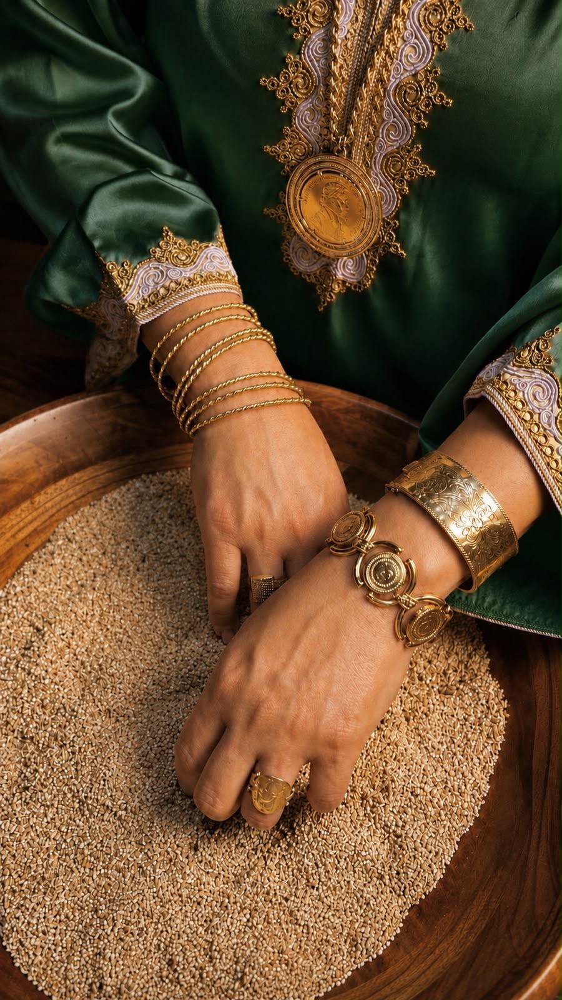
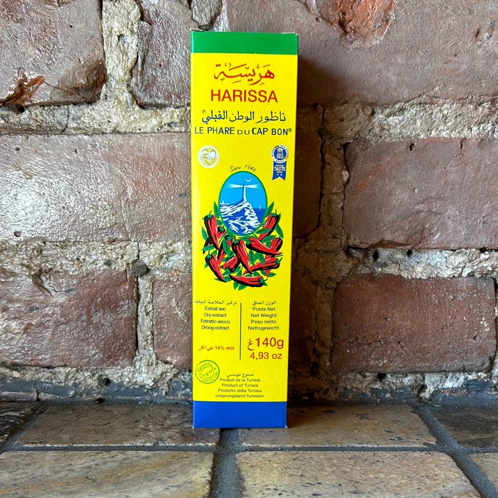
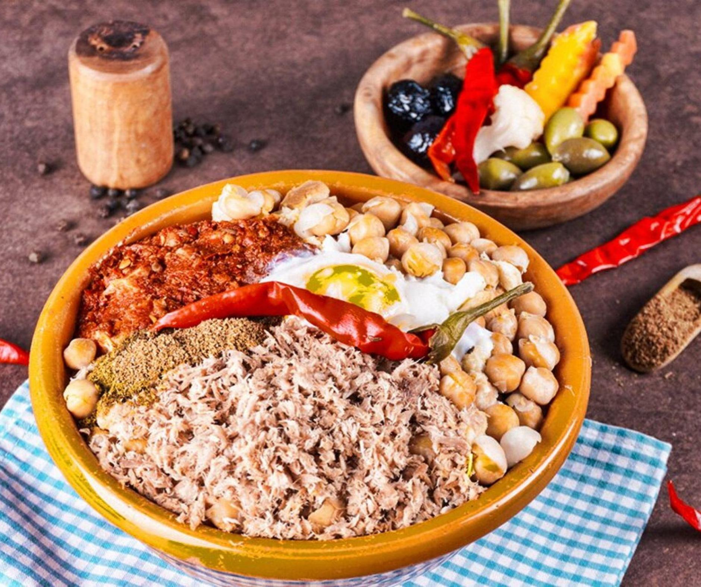

Couscous
A Tunisian classic dish.
It's usually served with vegetables, a flavorful sauce, and ingredients such as lamb, chicken, or fish.
Every family and region may have its own special way of preparing it.
A Tunisian classic dish.
It's usually served with vegetables, a flavorful sauce, and ingredients such as lamb, chicken, or fish.
Every family and region may have its own special way of preparing it.

Tunisia's famous chili paste. It’s a spicy chili paste and an important part of Tunisian cuisine.
Made with chili peppers, garlic, spices, and olive oil, it adds a kick to many traditional dishes.

Lablabi is a warming chickpea soup, often served with pieces of bread, cumin, garlic, olive oil, and harissa.
It's a popular, filling dish that's especially comforting during cooler weather.
